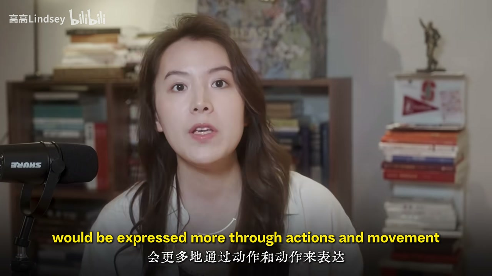
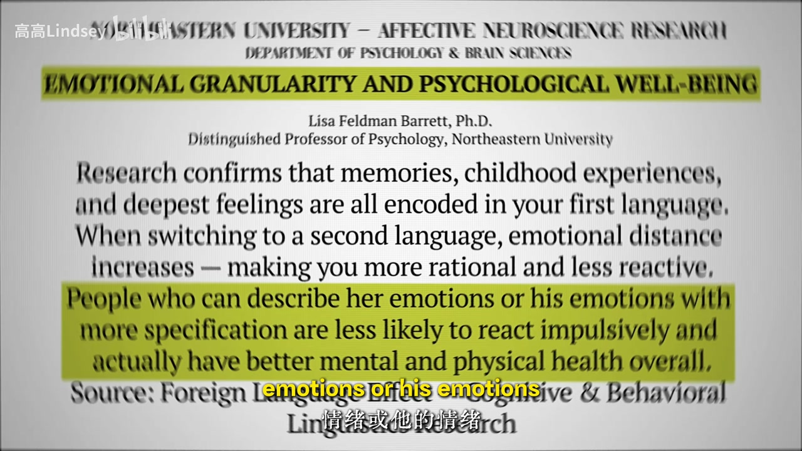
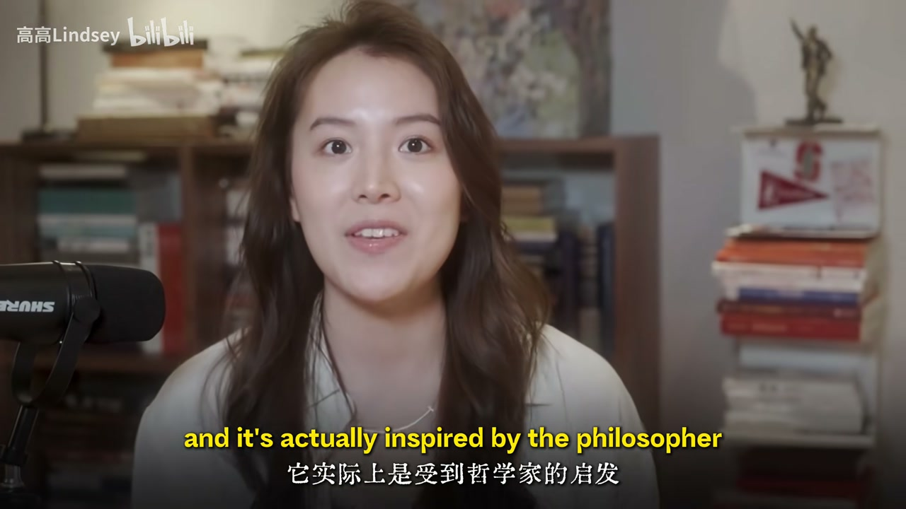

外语效应：距离产生理性
你可能发现自己说英语时像另一个人——更理性、少被情绪拖着。研究者称外语效应：母语装载童年记忆与深情绪；切到第二语言，天然多一层距离。
[00:08] 承认：语言方式会影响想法；换语言可能换一套人格感
Language use can shift how you think—and who you feel like.
[00:30] 外语效应：母语绑情绪记忆，第二语言带来疏离与理性
Foreign-language effect: L1 carries affect; L2 adds distance/reason.
语法习惯：名词化 vs 过程
有讨论指出英语爱把事情变成可「战斗/击败」的对象，中文更常靠动作与过程表达。多语言等于多套处理情绪与问题的脚本。学语言不只为考试，也在改默认思维方式。

[00:55] 英汉习惯不同：一个偏把过程物化，一个偏动作展开
English often reifies processes; Chinese often keeps verbs/actions.
[01:15] 多一门语言，多一套感受与解题的书籍/模式
Another language ≈ another toolkit for feelings and problems.
极端词与内耗
社媒奖励极端、高情绪密度的标签词，用一个词吸引注意力。但体验很少能被单标签说清。比较「我很内耗/愤怒」与「我不同意那句话、胸口发紧、体温上升」——后者具体，前者易自我暗示。语言贫乏时，世界也显得更窄、更极端。
[01:50] 为抢注意力只用极端标签——情绪被压缩成作战口号
Attention economy favors extreme labels—feelings become slogans.
[02:20] 改说身体感受与具体不同意点，等于把情绪拉远一点看
Name body cues and concrete disagreements—observe feelings from afar.

[02:45] 丰富极端词不一定更清醒，可能更易被坏消息与标签绑架
A rich vocabulary of extremes can increase reactivity, not insight.

[03:15] 语言的边界往往是世界的边界——用词贫乏，体验也被压扁
Language limits often feel like world limits—poor words flatten experience.
小结
内耗常被概括词喂大；换具体描述与跨语言视角，是可练的认知工具。